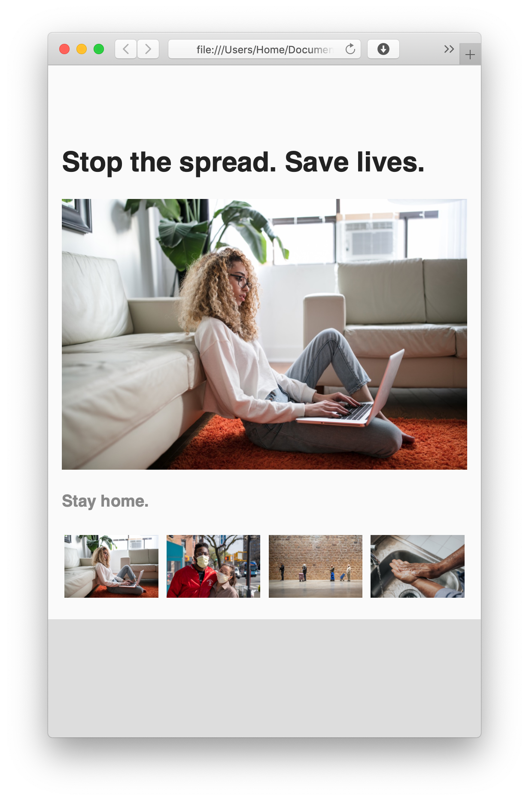

I’m providing the structure for a webpage, and your job is to edit both your HTML and your CSS files to make the thumbnails control the main image and page match the following layout:

Publish your pages on the URL: username.github.io/grc339/css-photo-gallery
As usual, the assignment is similar to the video. But there are few differences beyond the style:
Instead of three images like in the video, there are four images in the assignment.
Instead of Flexbox, I used CSS Grid for the navigation.
The transitions from one image to another should be done only with transparency, not movement.
The transitions should take half of a second, instead of the full second.
Download this zip file.
Unzip the file. It contains one HTML file, four images, and one CSS file.
Open the HTML and CSS in Brackets
Open the HTML file on your favorite browser.
Give the proper value to the following lines on the HTML: 39, 42, 45, and 48.
Give the proper value to the following lines on the CSS: 32, 33, 40, 41, 42, 57, 61, 62, and 63.
Don’t change anything else on your HTML or CSS.
The transitions from one image to another should be done only with transparency, not movement. (Which is different from the video.)
The transitions should take half of a second. (Again, different from the video.)
There needs to be a gap of 0.2em between the thumbnails in the navigation.
You’ll be evaluated on your technical skills using HTML and CSS, making the layout work as indicated above.
You don’t have to submit anything on Canvas.
Got to your public repository on GitHub, and open a new folder named grc339/css-photo-gallery/. ➤
Create a new index.html file and commit. ➤
Upload all six files (index.html, grid.css, and the four images) to your GitHub repository. ➤
Click on your name to check if it’s working.
Due Thursday, 9 July 2020, at 11:59 pm.